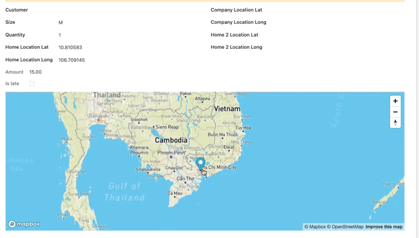
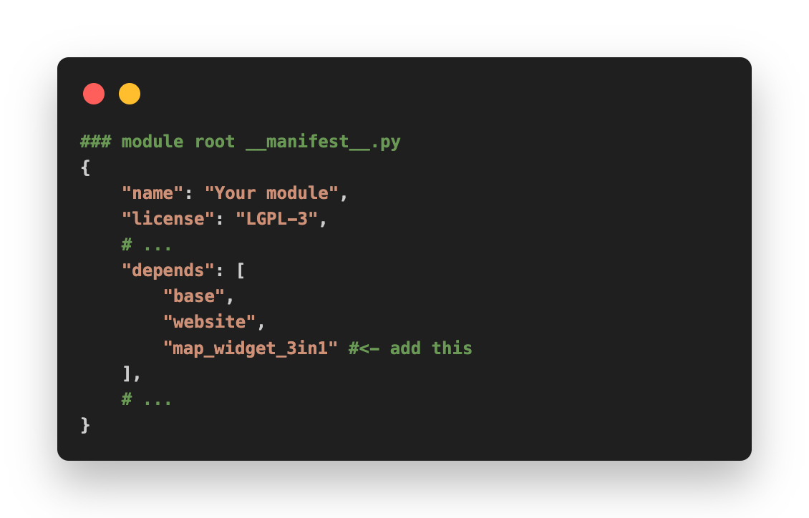
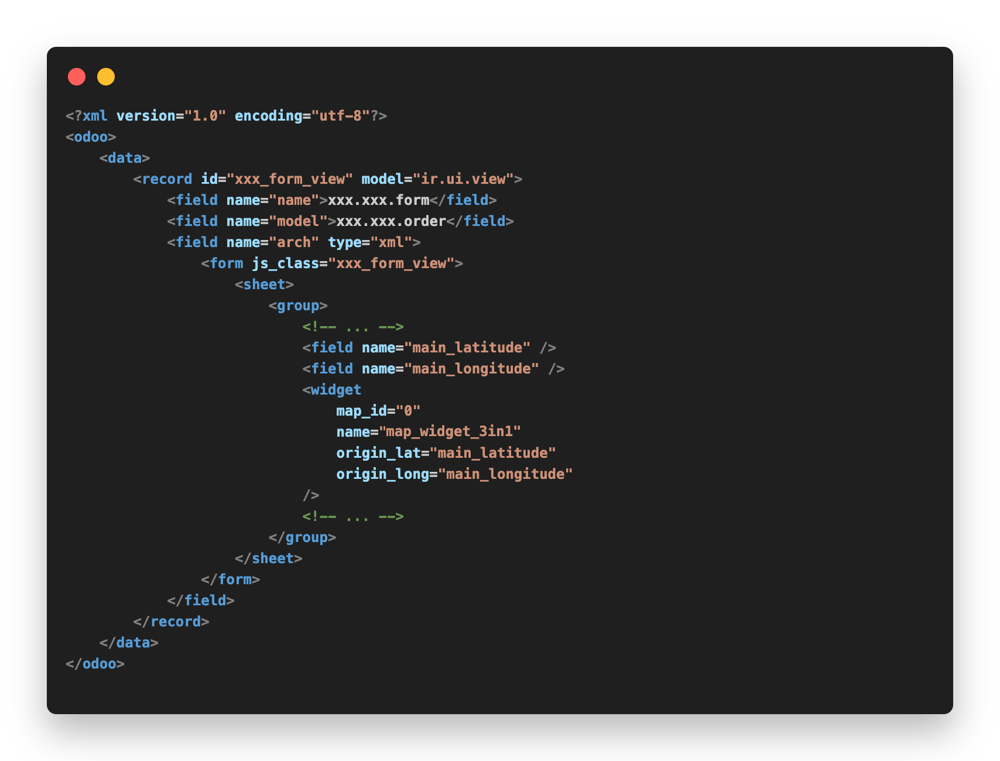
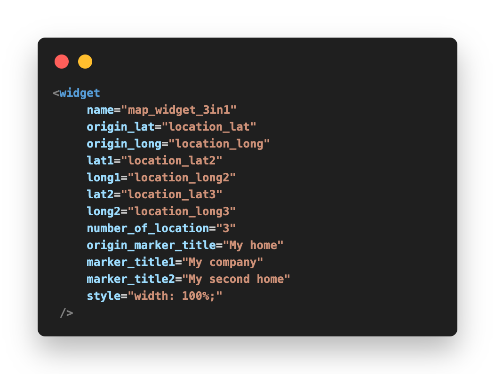

Demo



🗺️ Map Widget (3 in 1) - Odoo V16
Easy Map Widget integration.
Odoo Map Widget allows you to show the location with marker on the map through latitude and longitude. Also, you can show multiple location with marker with add dynamic latitude and longitude properties.
Especially, you can config to show location by one of the map (mapbox, street-map, google-map) by installing this addons only.
Demo

Installation
📌 Mapbox
a.1. If you want to display Mapbox, you need to register Map Box's API KEY
a.2. Enter the Mapbox API KEY into Setting. And if you enter the Mapbox's API KEY, the map widget will always choose Mapbox to display first.

📌 Open Street Map
b.1. If you want to display Street Map, just leave the Mapbox API KEY blank and tick into the Geo Localization option.
b.2. Make sure Geo Localization API's option is Open Street Map.

📌 Google Map
c.1. If you want to display Google Map, config following b.1 step.
c.2. Make sure Geo Localization API's option is Google Place Map, and do not forget adding Google API KEY


Usage Example
🚩 Noticed: We need to define the field with lat and long first, then put the lat and long into map widget with the same name value.

Properties
| Function name | Description | Example value |
|---|---|---|
| map_id | Map key id | (string number) "0" is default value |
| name | Widget's name | (string) must be add-ons's name "map_widget" |
| origin_lat | First location point latitude field name | (string) latitude field name in model |
| origin_long | First location point longitude field name | (string) longitude field name in model |
| style | HTML style value | (string) "width: 100vw; height: 70vh;..." |
| zoomLevel | **(string number)** map zoom level | (string number) "8" is default value https://docs.mapbox.com/help/glossary/zoom-level/ |
📌 If you want to add more than 1 location point, following bellow properties
| Function name | Description | Example value |
|---|---|---|
| number_of_location | Number of location you want to add in this map | (string number) because origin_lat and origin_long is the 1 of location, so if you want add more location, the value should be from "2" |
| lat1 | Second location point latitude field name | (string) latitude field name in model |
| long1 | Second location point longitude field name | (string) longitude field name in model |
And if you want add more than 2 location just define number_of_location (remember number of location must include the origin location) and add dynamic lat and long field name: lat1, long1, lat2, long2, lat3, long3... (number of location you want to add is unlimited)
📌 If you want to custom title for marker
| Function name | Description | Example value |
|---|---|---|
| origin_marker_title | Custom origin location's marker title | (string) Name of location |
| marker_title1, marker_title2,... [marker_title{Number of index location}] | Custom dynamic location marker title | (string) Name of location |
Similar add more than 1 location properties desciption above, If you want to custom any text title for marker. You just need to add field with number of location index: marker_title1,marker_title2,marker_title3...
📌 Dynamic config example

Credits & Support